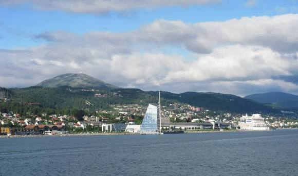
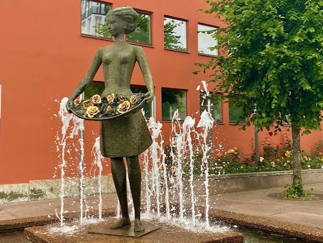
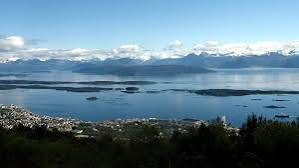
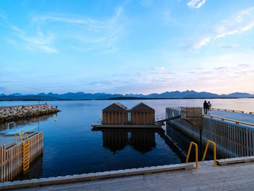
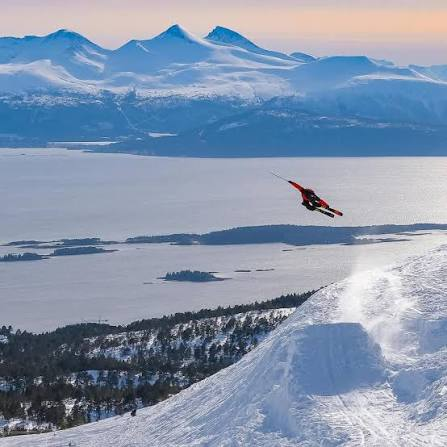
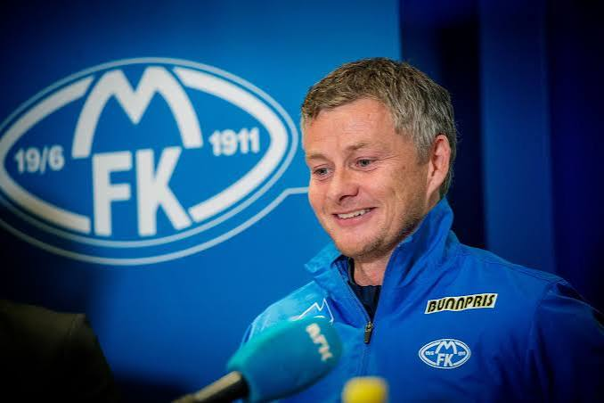
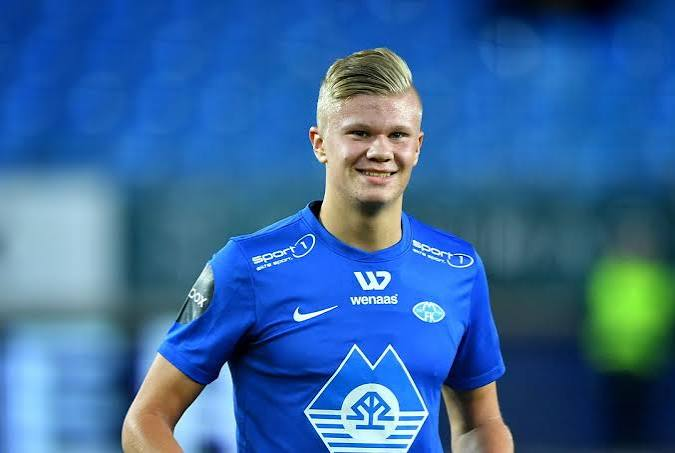
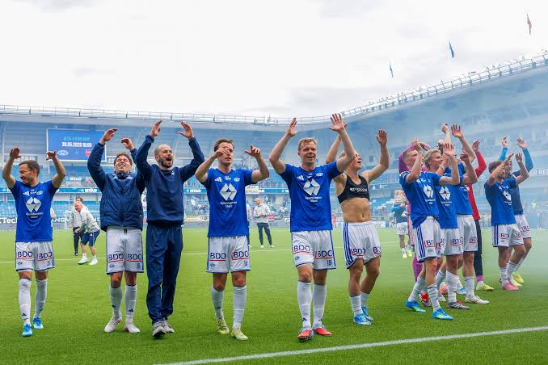

Moldeby
Molde er en av Norges vakreste byer, med en unik kombinasjon av natur og kultur. Byen tilbyr en rekke attraktive steder å besøke og aktiviteter å utføre.

Jeg er en 24 år gammel student ved Høgskolen i Bergen og studerer informasjonsteknologi. Jeg er født og oppvokst i Molde. Jeg liker å spille video spill, trene og være ute på sjøen for å fiske. På denne siden skal jeg prøve å friste deg til å ta turen til Molde by. Her er noen eksempler på hvorfor du som leser bør ta turen oppover mot den vakreste byen i Norge:

Molde er en av Norges vakreste byer, med en unik kombinasjon av natur og kultur. Byen tilbyr en rekke attraktive steder å besøke og aktiviteter å utføre.
Molde er kjent for sin levende musikkscene, spesielt innenfor jazz og blues. Årets Moldejazz-festival er en av Norges største musikkfester og tiltrekker mange besøkende fra hele landet.

Molde er blir også kalt for rosnesby. det er på grunn av byens mange frodige og blomstrende rosehager

Se for deg du våkner opp går til vinduet og drar fram gardinene også ser du denne fatastiske utsikten!

Den skandinaviske sjøen rundt Molde er kjent for sin vakre natur og tystnad. Det er et perfekt sted for å nyte naturen og ta en pause fra den raske livsstil.

Tusten Skiheiser ligger i Årødalen, kun 10 minutter fra sentrum og og er kjent for å være et av Norges beste frikjøringsanlegg når forholdene er rette.

Kom til Molde for å spille fotball. Dro videre til Manchester United og scoret vinnermålet i Champions League-finalen. Molde har tydeligvis noen ganske gode karrieremuligheter.

Hva er dette for noe? Har verdens beste spiss vært og bodd i Molde før deg? Erling skjønte som 16 åring at for å bli best så må man få "The Molde experience".

Molde FK: Liten by. Stor stadion. Enda større ambisjoner.